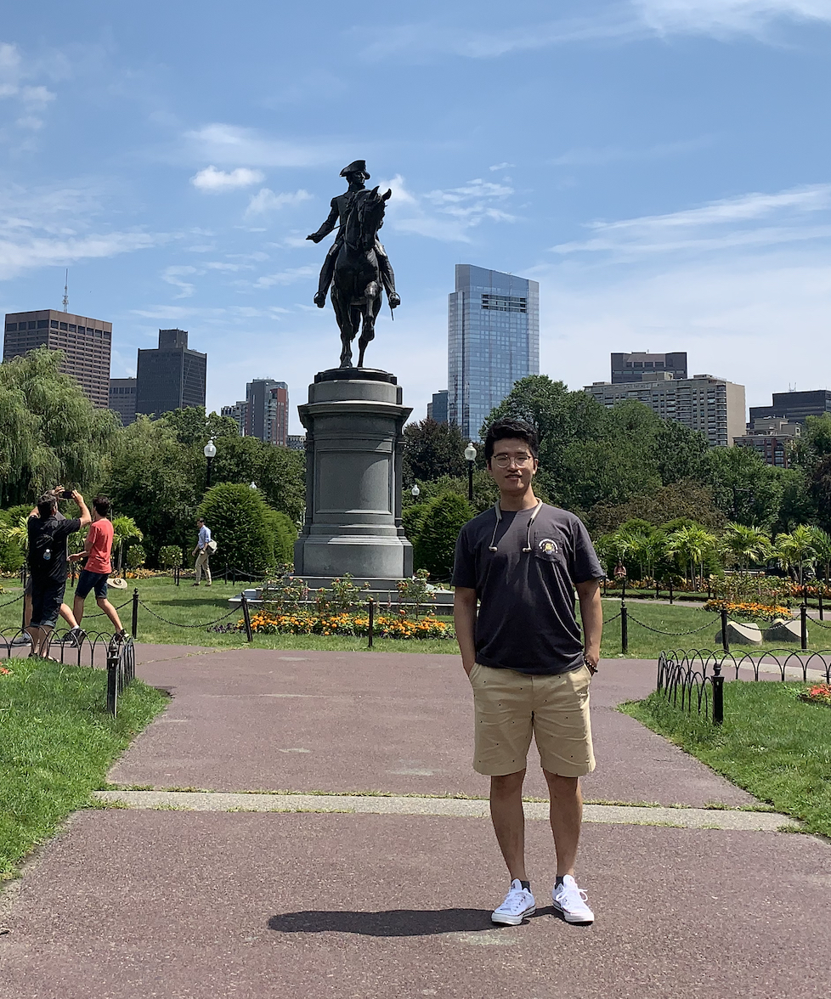

|
Shikang(Danny) Wu / 吴世康
I am now a Senior Machine Learning Engineer at the Douyin search team, where I've been working since December 2023. Previously, I spent two years at Baidu, also as part of the search team, focusing on search and personalization ranking systems.
I received my M.S. degree in June 2021 from the School of Information Technology, Beijing Jiaotong University, under the supervision of Zhihao Wu and Youfang Lin.
I also received my B.E. degree from the same institution in June 2018.
I am starting to work toward meaningful impact. Feel free to contact me:
Email: skwu AT bjtu.edu.cn / wushikang AT bytedance.com
Google Scholar /
Linkedin
|

|
|
Research Interests
I'm interested in recommender systems and information retrieval. More specifically, my research focuses on:
- Large-scale recommendation models inspired by recent progress in LLMs and VLMs, emphasizing performance improvements through scaling model capacity.
- The integration of multimodal signals and personalization in recommender systems.
- Representation learning, particularly graph representation learning.
- Generative recommendation models, including sequential and multimodal paradigms.
|
|
Experience and Education
Experience
- Dec. 2023 - Now, Senior Machine Learning Engineer, Douyin-Search, Bytedance
- Jun. 2021 - Dec. 2023, Senior Machine Learning Engineer, Baidu-Search, Baidu (Received the only cross-level promotion within the Business Group.
)
- Jun. 2020 - Sep. 2020, Machine Learning Engineer Intern, Meituan
Education
- 2018.09 - 2021.06, M.E., School of Information Technology, Beijing Jiaotong University
- 2014.09 - 2018.06, B.E., School of Information Technology, Beijing Jiaotong University
|
|
Publications
Note: Authors marked with * are equal contributions.
|
-
LEMUR: Large scale End-to-end MUltimodal Recommendation.
Xintian Han*, Honggang Chen*, Quan Lin*, Jingyue Gao*, Xiangyuan Ren*, Lifei Zhu, Zhisheng Ye, Shikang Wu, XiongHang Xie, Xiaochu Gan, Bingzheng Wei, Peng Xu, Zhe Wang, Yuchao Zheng, Jingjian Lin, Di Wu, Junfeng Ge
Arxiv, 2025
|
|
{kind=link}